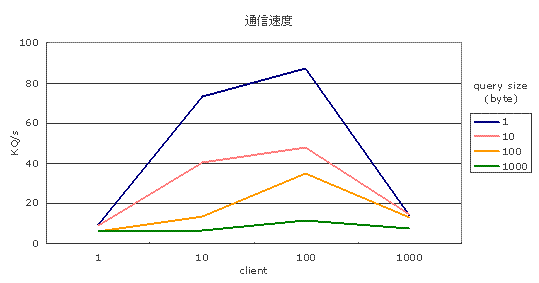

VCE最高速度ベンチマークとは、VCEミドルウェアの通信速度を測定する ベンチマークで、Queryサイズやクライアント数ごとにおける最高速度を測定する。
このベンチマークでは、性能向上のための中継サーバ SWP を使用していないことに 注意が必要である。使用している版のベンチマークについては、bench_swp.html を参照。
vce/bench/noswpにベンチマークがあるので、そのディレクトリに移動する。 benchsv.cがサーバプログラム、benchcl.cがクライアントプログラムで、 このプログラムを編集して通信のための設定をおこなう。
benchsv.cを開き、使用するポート番号と暗号の設定をおこなう。 ポート番号はportnum変数の値を指定することでおこなう。
unsigned short portnum = 23456;通信に使用する暗号の設定はcipher変数の値を指定することでおこなう。
VCE_BLOCK_CIPHER cipher = VCE_BLOCK_CIPHER_NONE;benchcl.cを開き、サーバのIPアドレスとポートの番号と暗号の 設定をおこなう。 ポート番号はportnum変数の値を指定することでおこなう。
unsigned short portnum = 23456;サーバのIPアドレスの設定はhost変数の値を指定することでおこなう
char host[] = "192.168.1.20";通信に使用する暗号の設定はcipher変数の値を指定することでおこなう。
VCE_BLOCK_CIPHER cipher = VCE_BLOCK_CIPHER_NONE;ベンチマークを取るとき徐々に通信量を増加させるが、 その増加させる割合をcoefficientで指定している。
#define coefficient 100この値が大きいと、通信量はすぐに増加し、この値が小さいと、 通信量はゆっくりと増加する。値は大体10〜1000程度が良い。 サーバプログラムのコンパイルはsv0シェルスクリプトを実行することで おこなう。
$ ./sv0s.outという実行ファイルが生成されるので、サーバマシンでs.outを 実行する。
$ ./s.out &
クライアントプログラムの実行はcl*_*シェルスクリプトを実行することで おこなう。（*には0〜3の値が入る。）*の値によって通信速度を測定する ときのパラメータが変わってくる。それは次の表のとおりである。
| query size＼client | 1 | 10 | 100 | 1000 |
| 1 | cl0_0 | cl0_1 | cl0_2 | cl0_3 |
| 10 | cl1_0 | cl1_1 | cl1_2 | cl1_3 |
| 100 | cl2_0 | cl2_1 | cl2_2 | cl2_3 |
| 1000 | cl3_0 | cl3_1 | cl3_2 | cl3_3 |
$ ./cl2_3と入力する。 それにより、c.outという実行ファイルが生成され、指定したパラメータで、測定を開始する。 測定結果はサーバ側のコンソールとs.txtファイルに10秒間ごとに次のように出力される。
conn size = 10 recieved querry = 94638 query / sec = 9463.800000 byte / sec = 9463800.000000conn sizeはクライアント数を表し、recieved querryは10秒間にどのくらいの Queryを受信したかを表す。query / secは1秒間に何Queryを受信したかを 表す値である。byte / secは1秒間に何バイトの送受信がおこなわれたかを示す 値である。 測定を終了する場合は、クライアント側のコンピュータでは
$ killall c.outと入力してクライアントプログラムを終了させる。 サーバ側のコンピュータでは、
$ killall s.outと入力してサーバプログラムを停止させる。
クライアント側、サーバ側ともにPentium4 2GHzのPCを使用し、 100MbpsのEthernetでマシンを接続してベンチマークをおこなった。 以下の表が暗号を使わなかった場合のベンチマーク結果である。
| query size＼client | 1 | 10 | 100 | 1000 |
| 1 | 9.54 | 73.6 | 87.0 | 14.0 |
| 10 | 9.28 | 40.5 | 48.2 | 14.9 |
| 100 | 5.83 | 13.6 | 34.9 | 13.5 |
| 1000 | 6.16 | 6.43 | 11.4 | 7.77 |
縦軸はquery sizeで送受信するQueryのbyte数をあらわす。
横軸はクライアント数である。通信速度は秒間に何kQ送受信できたかを
表す値で単位はkQ/sである。
Queryサイズごとにクライアント数を変化させた場合のグラフは
以下のとおりである。

Queryサイズ1000、クライアント数100の場合、秒間に送受信できるビット数は
87Mbpsであり、LANの通信速度である100Mbpsに近い値が出ている。
また、この時点でのCPU使用率は、サーバ、クライアントともに1%以下であった。
以下の表が暗号を使った場合(RIJNDAEL/16)のベンチマーク結果である。
| query size＼client | 1 | 10 | 100 | 1000 |
| 1 | 9.04 | 43.8 | 56.4 | 10.7 |
| 10 | 8.25 | 43.7 | 55.2 | 10.9 |
| 100 | 6.69 | 13.8 | 22.1 | 7.97 |
| 1000 | 1.74 | 5.51 | 5.99 | 3.13 |
上記の2通りのベンチマークにおいては、サーバは、受信したすべてのデータを echo(クライアントにそのまま送りかえす)している。つまり、1KBのデータを 受信したら、1KBのデータをそのまま返す。 したがって、暗号化性能は、受信時にデコード、送信時にエンコードの処理 をしているため、約2倍の負荷が発生している。 これはオンラインゲームの一般的な利用状態とは異なる(通常はサーバから の返しのほうが数倍多い)ことに注意が必要である。たとえばMMORPGの場合、 1KB受信すると10KB送信することはざらである。
また、今回のテストで使用したEthernetは、100Mbpsの受信と 100Mbpsの送信が同時にできる全二重に対応しているため、 暗号なし版のテストにおいて送受信あわせて100Mbpsを越えていることにも 注意されたい。
本ベンチマークは、SWPを使用しない状態でのVCEの最高速度を計測した。 暗号を使わない場合には 100Mbps のEthernet の限界速度が常に達成され、 暗号を使う場合には50MbpsあたりでCPUの限界に突きあたった。
したがって、ひとつのゲームサーバの最高性能をより高めたい場合は、